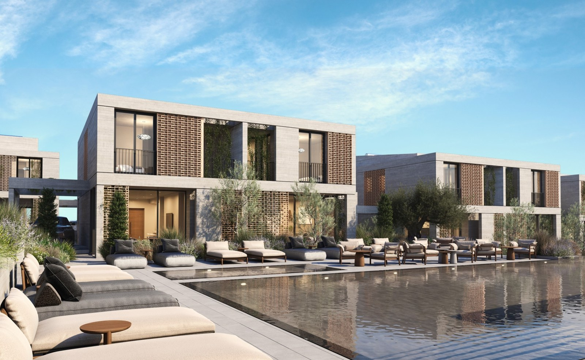
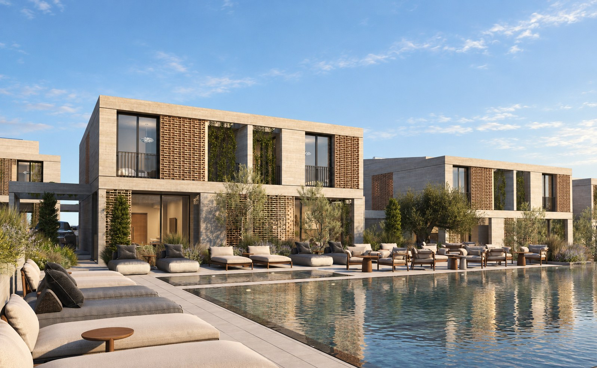
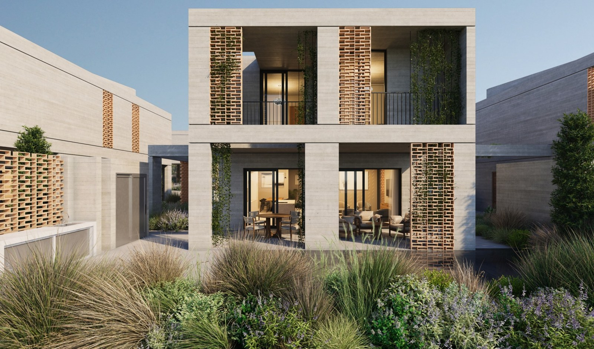
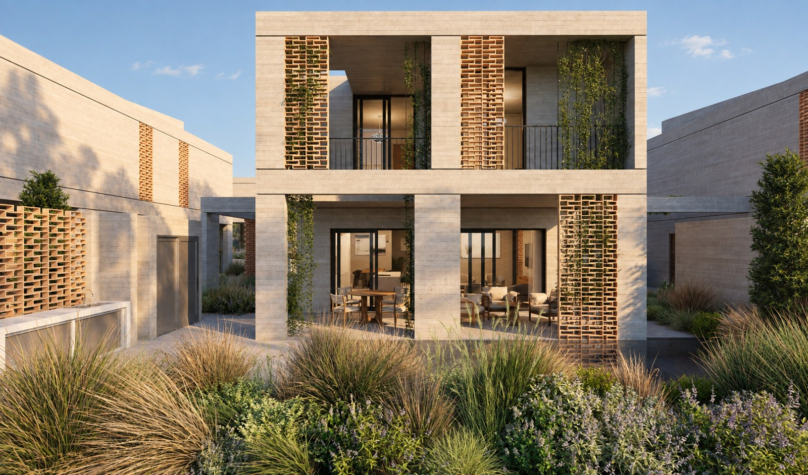
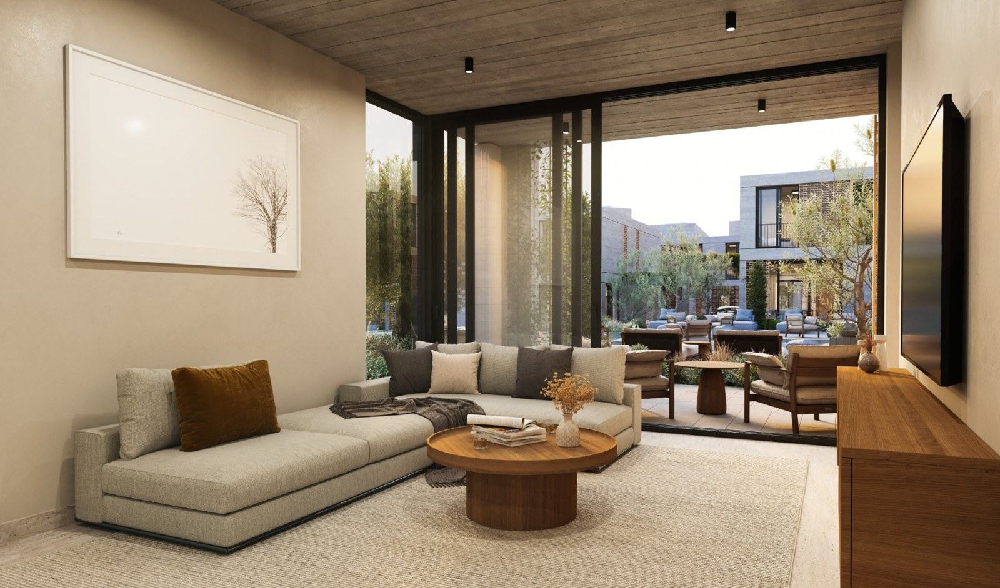
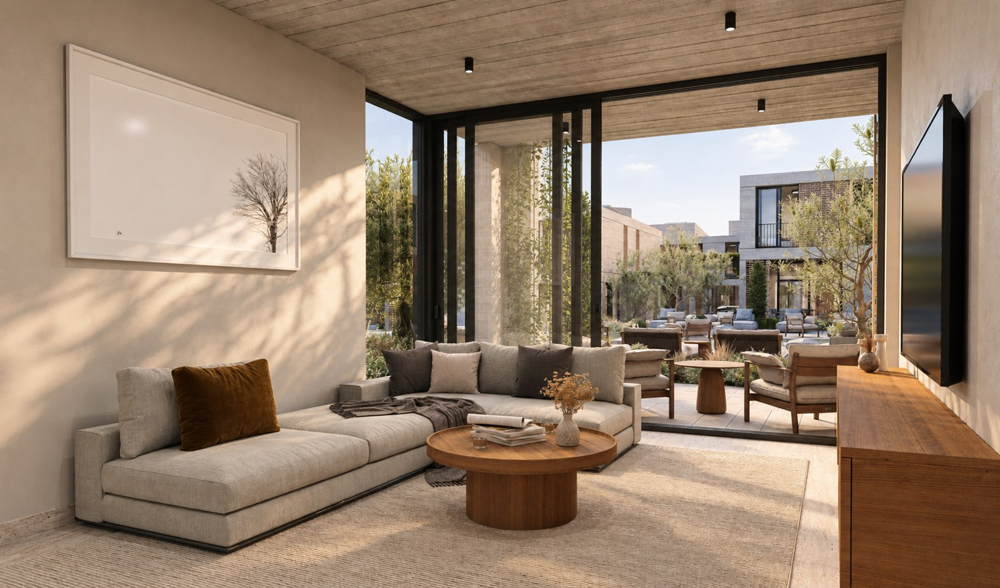

Avalon Valley.
A second light.
Three of your own project images, explored in a different light. We are A510 Architects, and APERTIS is our image practice. This is how we introduce ourselves: through the architecture you already have.
Visual proposals for review. Drag each image to compare, or choose a lighting variant.


ORIGINALAPERTIS · PROPOSALWarm light across the villas and the communal pool.


ORIGINALAPERTIS · PROPOSALConcrete, brick screens and planting in a warmer light.


ORIGINALAPERTIS · PROPOSALA living room connected to the courtyard beyond.
01 / How we work
Your project
Choose the views you want to use in your listings, brochure or launch. We work from your existing images.
A second version
We develop the light, material detail and atmosphere. The architecture and camera remain the reference throughout review.
Your review
We check the proposals with you before delivery. One revision per image is included.
02 / The image package
One project · 10 images€1200
- 5 business days
- 1 revision per image
- Web and print exports
The five-day schedule starts once the source images and brief are agreed. Final output sizes are agreed before production. No subscription or retainer.
03 / The bureau behind the images
A510 Architects designs houses, residential buildings and whole settlements — architecture, interiors and landscape. We approach an image as architects: looking at the space, its materials and the life it can hold. APERTIS is our first introduction; the bureau is also available for your next project.
04 / A conversation
Would you like to explore a set for Avalon Valley?
Reply to ArkadiiДля владельца · выбор и проверка
Предварительно выбраны A / A / A: дневной свет яснее показывает материалы. Все шесть вариантов — независимые генерации от оригиналов. Владелец пока не утвердил кадры.
- Sapphire исключён: официальный статус Sold Project. Avalon Valley: виллы A/B/C — Available на официальном сайте 22.09.2026. Off-plan указан вторичным порталом; стадия стройки напрямую не подтверждена.
- Полные PNG, точные промпты, источники и ограничения находятся в локальном пакете. Нативные результаты: 1597×985 (бассейн), 1634×962 (фасад и интерьер); апскейла нет.
- Сохранность основных контуров оценена визуально. Точная геометрия, каждая ячейка кирпичных экранов и все мелкие объекты не сертифицированы. Модель изменила рисунок растений, отражения и мелкие интерьерные фактуры.
- Сумеречные варианты добавляют световые пятна в зелени, не доказанные исходником. В интерьере изменились рисунок ковра и дерева в картине, складки ткани и мелкие предметы на столе.
- Это локальная копия без аналитики. Ничего не опубликовано и не отправлено.